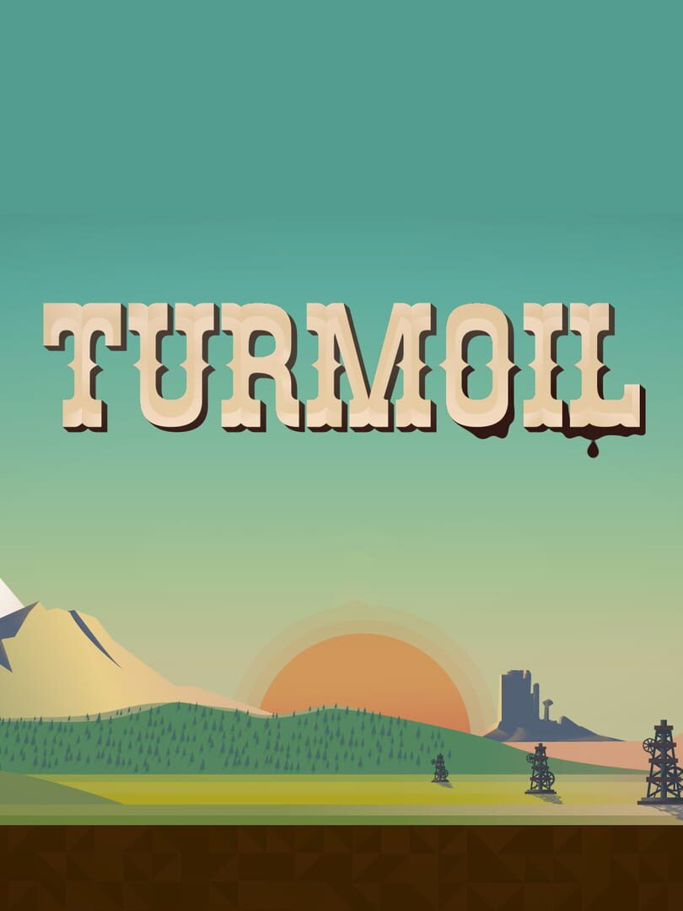

Turmoil
Turmoil
Details
|  | |
| Playtime | Not Played |
| Last Activity | Never |
| Added | 2/16/2022 17:42:11 |
| Modified | 2/16/2022 17:42:18 |
| Completion Status | Not Played |
| Library | Steam |
| Source | Steam |
| Platform | PC (Windows) |
| Release Date | 6/2/2016 |
| Community Score | 69 |
| Critic Score | |
| User Score | |
| Genre | Indie Simulation Strategy |
| Developer | Gamious |
| Publisher | Playdigious |
| Feature | Single Player |
| Links | PCGamingWiki Official site GOG Database HowLongToBeat IGDB IsThereAnyDeal ProtonDB SteamDB MobyGames Wikipedia |
| Tag | |
Description
A Turmoil egy kellemes látvánnyal és humorral ellátott szimuláció, amit a 19. századi Észak-Amerikai olaj verseny inspirált. Kóstolj bele az akkori versenybe ès rivalizálásba, miközben a sikeres olaj mágnás útját járod. Ahogy pénzt keresel a fúrásokkal és az olaj eladással, a város veled együtt nő majd.
Bérelj földet a város árverésén és keress olajat. Építsd egy fúrótornyot, hozz létre egy hatékony vezeték rendszert és hozd fel az olajat, hogy elraktározhasd a silókban. Add el az olajat a legjobb időben, hogy maximalizáld a profitot. Aztán vásárolj elengedhetetlen fejlesztéseket a városban, hogy megbirkózz a kövekkel, gázzal és jéggel. Vegyél több város részvényt az árverésen a versenytársaidnál, hogy te lehess az új polgármester.

Bérelj földet a város árverésén és keress olajat. Építsd egy fúrótornyot, hozz létre egy hatékony vezeték rendszert és hozd fel az olajat, hogy elraktározhasd a silókban. Add el az olajat a legjobb időben, hogy maximalizáld a profitot. Aztán vásárolj elengedhetetlen fejlesztéseket a városban, hogy megbirkózz a kövekkel, gázzal és jéggel. Vegyél több város részvényt az árverésen a versenytársaidnál, hogy te lehess az új polgármester.
- Egy kampány ahol felépítheted a saját karriered mely a semmiből az olajbáróig tart és legyőzhesd az ellenfeleid.
- Tucatnyi fejlesztés és új eszköz, hogy javítsd az olajfúrási műveleteket.
- Találkozz a város karaktereivel a szalonban és köss velük gyanús üzleteket.
- Játssz az egyedi játék módban, hogy több milliónyi procedurálisan generált szintet kapj és annyi pénzt keress amennyit csak tudsz egy év alatt.
- Steam Teljesítmények, Kitűzők, Játékkártyák és Felhő Mentés.
- Bérelj földet a városi árverésen és keress olajat a forráskutató, vakond vagy szkenner használatával.
- Maximalizáld a profitot, azzal, hogy a természetes gázokkal növeled az olaj árát.
- Licitált túl a versenytársaid a részvény árfolyamon.